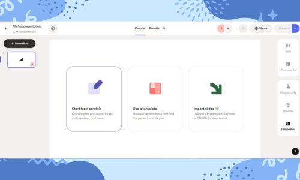

¿Que es Mentimeter?
Mentimeter es una herramienta en línea que permite crear presentaciones interactivas con encuestas, preguntas y respuestas en tiempo real, nubes de palabras, y otros elementos interactivos para involucrar a una audiencia según Mentimeter.
¿Para que sirve?
Mentimeter es una herramienta online que se usa para crear presentaciones interactivas, encuestas, cuestionarios y juegos de preguntas y respuestas en tiempo real. Permite a los participantes interactuar con la presentación utilizando sus propios dispositivos (como teléfonos inteligentes).
Como lo puedes usar:
Se utiliza creando una cuenta en Mentimeter, diseñando presentaciones con diapositivas interactivas y luego compartiendo un código o código QR para que la audiencia participe desde sus dispositivos.

Esta imagen muestra como es el inicio de de cesion de mentimeter, como se ve, todo esta en ingles, asi que recomiendo usar traductor.

Esta imagen es despues del inicio de cesion, aqui ya se ve en donde ya se puede edutar y subir tus documentos o fotos y puedes hacer todo lo que la pagina ofrece.
¿Quien creo Mentimeter?
Con sede en Estocolmo, Suecia, la aplicación Mentimeter fue creada por el empresario sueco Johnny Warström y Niklas Ingvar como respuesta a reuniones improductivas.
¿Como ha ayudando a la comunidad digital?
Mentimeter ayuda a la comunidad digital facilitando presentaciones interactivas y participación en tiempo real, especialmente en entornos educativos y profesionales. Permite a los presentadores involucrar a la audiencia mediante encuestas, preguntas, nubes de palabras y otros tipos de interacción. Además, fomenta la colaboración y el aprendizaje activo, permitiendo que todos los participantes puedan expresarse y recibir retroalimentación instantánea.
¿Que se distinguia de las demas aplicaciones?
Mentimeter se distingue de otras aplicaciones de presentaciones por su enfoque en la interactividad y la participación de la audiencia en tiempo real. A diferencia de las presentaciones tradicionales, Mentimeter permite a los asistentes participar activamente a través de sus dispositivos, respondiendo a preguntas, votando en encuestas y proporcionando retroalimentación inmediata. Esto crea una experiencia más dinámica y atractiva, convirtiendo las presentaciones en conversaciones interactivas.